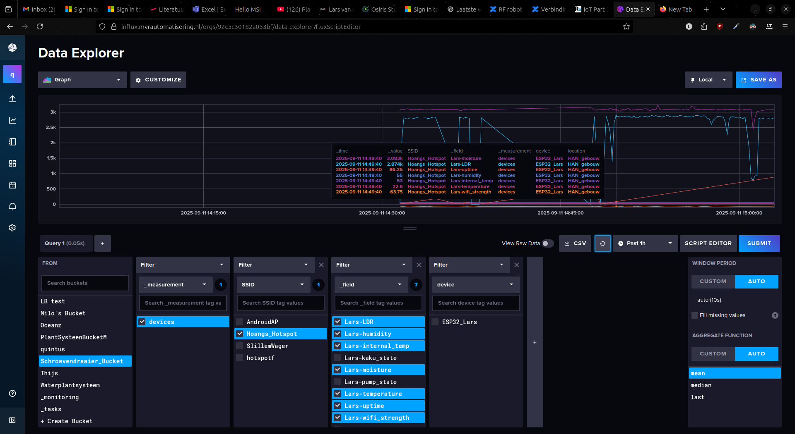

Ik heb eigenlijk vrij weinig over deze opstelling te melden, de code staat in de ZIP waar deze website ook in staat. Hieronder zie hoe alles aangesloten was en dat er data binnenkwam op het online dashboard, de ON betekent dat de pomp aan staat. Verder is helemaal onderaan nog een demo video.

Hieronder is het dashboard te zien waar alle data binnenkomt.
Na het dashboard werkend te hebben, heb ik het schermpje aangesloten, dat is hieronder te zien.